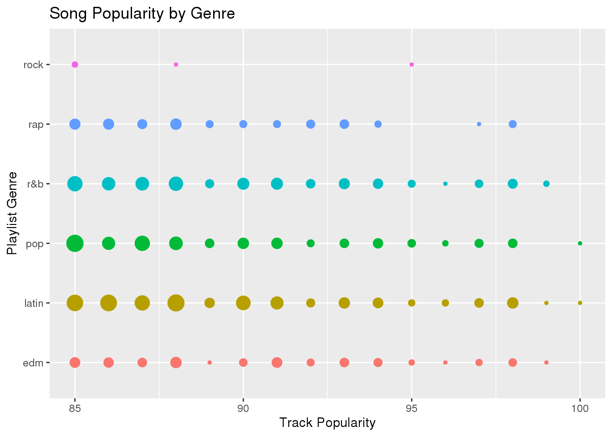
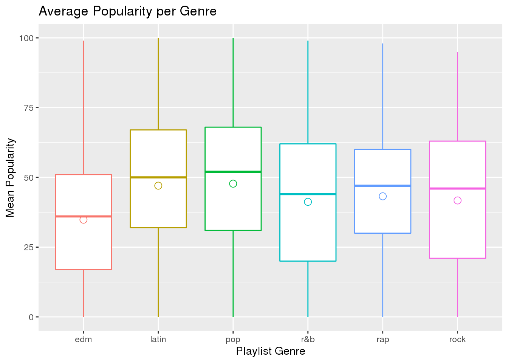
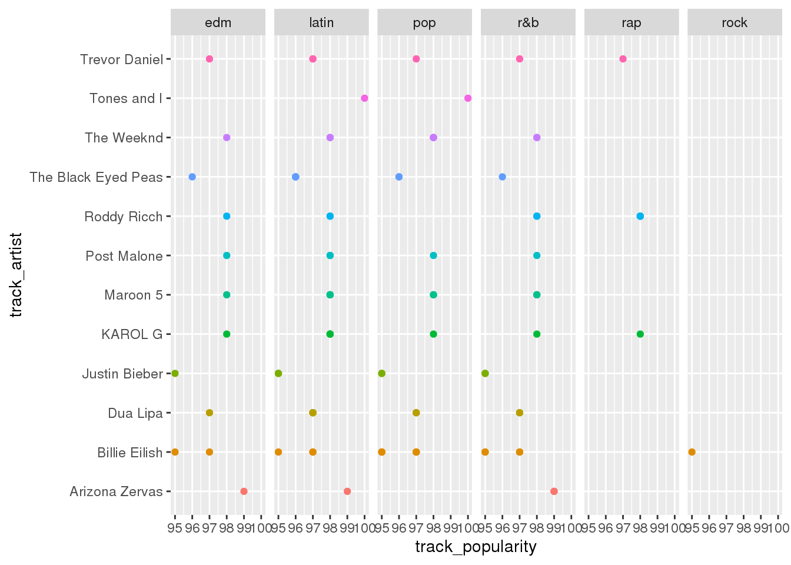

library(here)
library(ggplot2)
library(tidyverse)
library(readxl)
knitr::opts_chunk$set(tidy = TRUE, echo = TRUE)
music <- read_csv(here::here("data", "tidytuesday", "data", "2020", "2020-01-21", "spotify_songs.csv"))For my second dataset, I will be examining song genres vs song popularity. This dataset has 32,833 observations and uses 23 variables, and I will be using 4 of those variables. The first variable I will use is track_name, which lists the name of the song. The second variable I will use is track_artist which lists the name of the artist. The third variable I will use is track_popularity, which shows the score that it has received by Spotify. The final variable I will use is playlist_genre, which shows what genre the song fits into.
Which genres have the most amount of songs that are very popular (85-100)? For this question I will start by selecting and grouping the appropriate variables. The three variables that I am selecting for this observation are track_name, playlist_genre, and track_popularity. Next, I am going to group my data by the playlist_genre to make sure that the data is seperated into the appropriate categories. After that I will create the graph. For this graph I will be using a count chart.
music %>% select(track_name, playlist_genre, track_popularity) %>% group_by(playlist_genre) %>%
ggplot(aes(x = track_popularity, y = playlist_genre, color = playlist_genre)) +
geom_count(show.legend = F) + ggtitle("Song Popularity by Genre") + xlab("Track Popularity") +
ylab("Playlist Genre") + xlim(85, 100)## Warning: Removed 32091 rows containing non-finite values (stat_sum). In this graph the larger the circle is the higher the count is. As we can see rock has the least amount, while pop and latin have the highest number of popular songs. As the popularity ratings get higher, the amount of songs that have a popularity rating closer to 100 goes down significantly. This makes sense, as not everyone that listens to a song will have a positive opinion of it.
Which genre has the highest overall average popularity rating of each genre? For starters, I will select the appropriate variables. I will also summarize the average of the track popularity by genre into a new variable called mean_pop.
music %>% select(playlist_genre, track_popularity) %>% group_by(playlist_genre) %>%
ggplot(aes(x = playlist_genre, y = track_popularity, color = playlist_genre)) +
geom_boxplot(show.legend = F) + stat_summary(fun.y = mean, geom = "point", shape = 1,
size = 3, show.legend = F) + ggtitle("Average Popularity per Genre") + xlab("Playlist Genre") +
ylab("Mean Popularity") As we can see pop has the highest average popularity, which is in line with the previous question. Latin is close behind, and rap and rock close behind that. Unlike the previous question, edm is the lowest on this chart. What suprises me about this analysis is how popular Latin is. I would assume that most Spotify users would be listening to the bigger artists like Taylor Swift of Billie Eilish. Personally, I have not heard of many of the Latin artists before.
In each genre, which artists are the most popular? For this question, we will start by selecting the appropriate variables and grouping by track_artist. Then, we need to filter out the artists that have songs under 95 popularity to keep the graph from getting too crowded.
music %>% select(playlist_genre, track_artist, track_popularity) %>% group_by(track_artist) %>%
filter(track_popularity > 94) %>% ggplot(aes(x = track_popularity, y = track_artist,
color = track_artist)) + geom_point(show.legend = F) + xlim(95, 100) + facet_grid(~playlist_genre) As we can see each artist has multiple categories that their music falls into. For EDM, the most popular artist is Arizona Zervas. For Latin, the most popular is Tones and I. For Pop the most popular artist is also Tones and I. For R&B the most popular artist is Arizona Zervas. For Rap the most popular artist is tied between Roddy Ricch and KAROL G. For Rock the only selection is Billie Eilish so she wins be default.